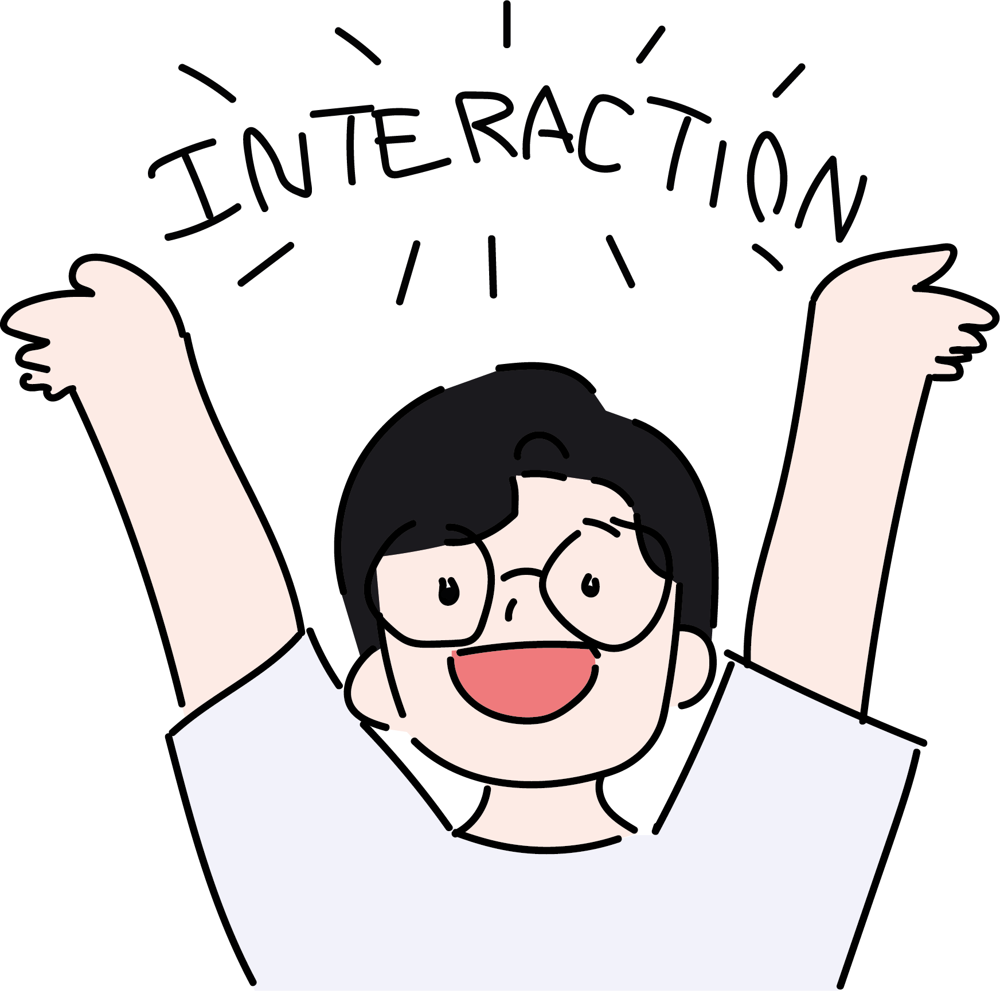
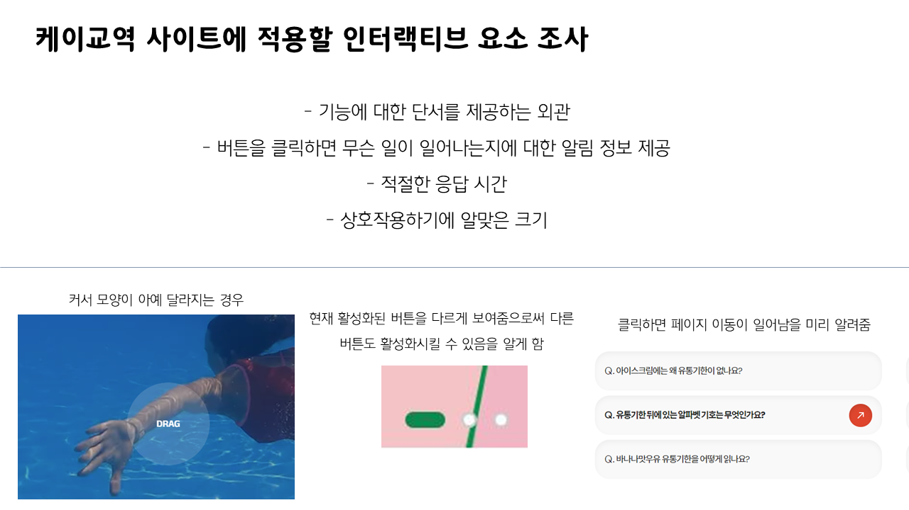
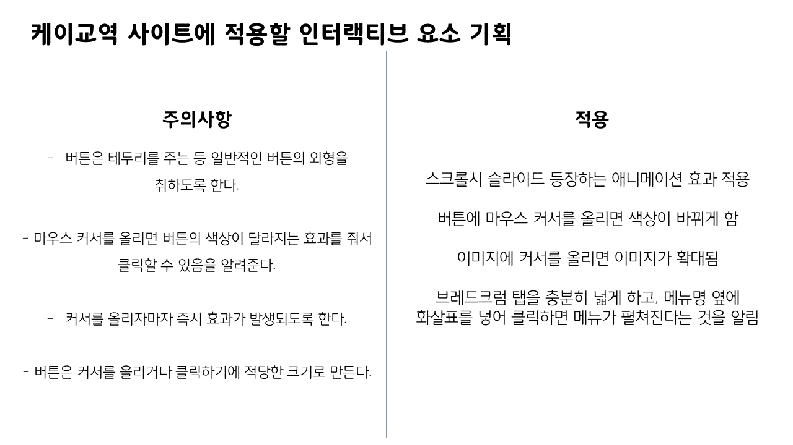
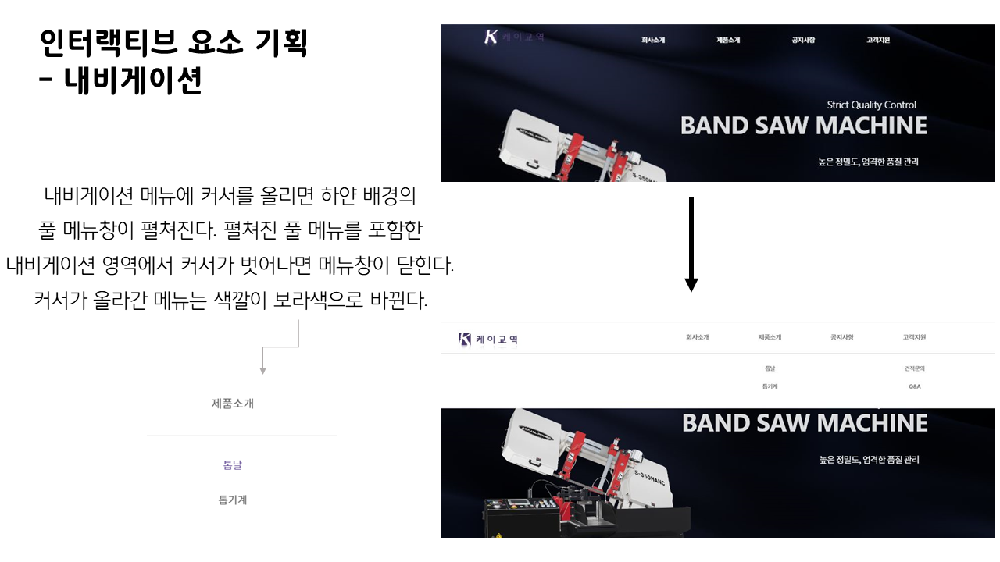
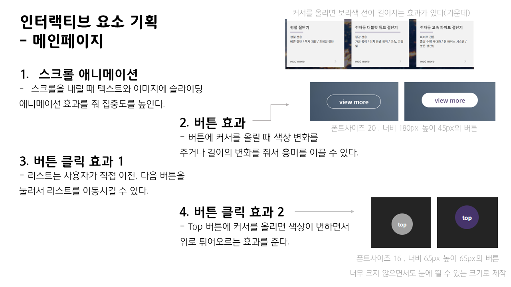

디자인 구성요소 응용이란 ?
이전 능력단위(디자인 구성요소 설계 & 제작)에서
배운 것을 응용하여 인터랙티브 요소를 제작합니다.
개념 파악
: 인터랙티브 디자인 개념 파악
인터랙션 디자인
(Interaction Design)
제품·시스템을 사용할 때 사용자의 행위에 대해 제품·시스템이 어떻게 반응
해야 하는가를 설계하고 디자인하는 것으로, 인간 중심의 디자인을
바탕으로 제품·시스템의 사용성과 접근성을 높이는 것이 핵심 목표이다.
요소 조사
인터랙티브 요소 조사

기획
인터랙티브 디자인 기획



NCS 더보기